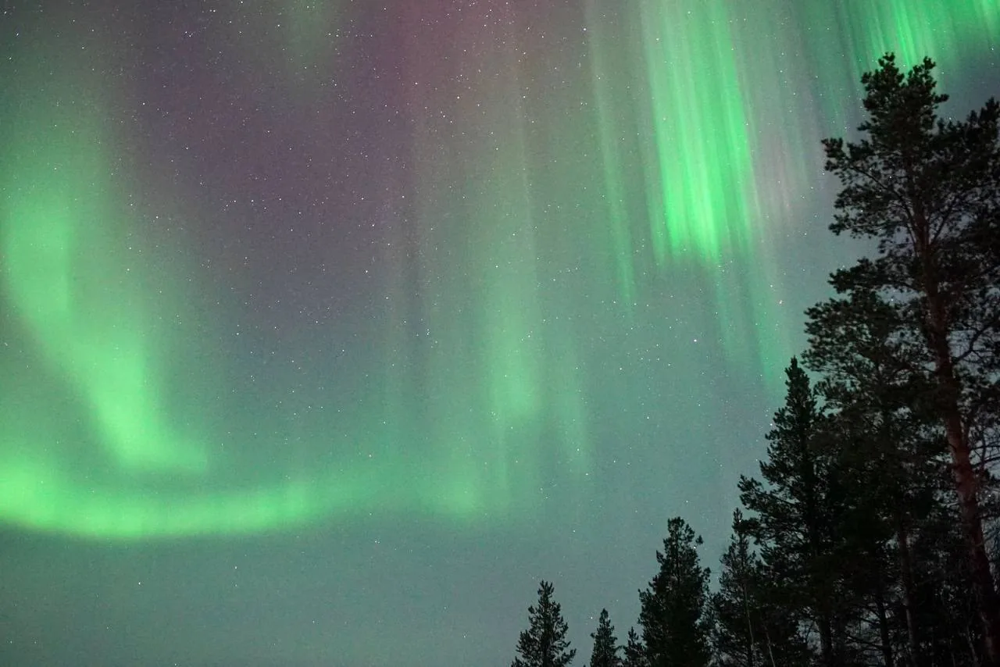
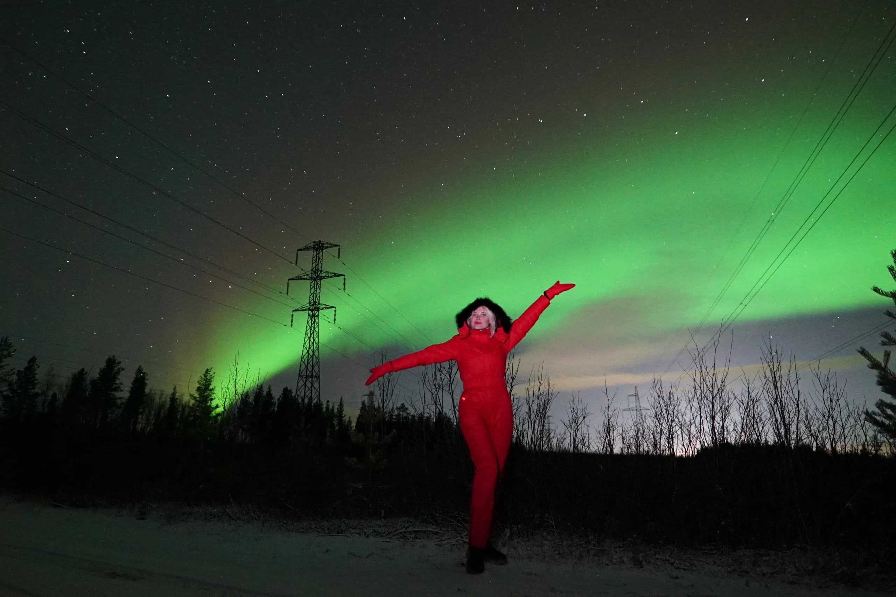

The northern lights are the main reason people come to Murmansk. During the polar night the sky above the Kola Peninsula catches fire with green and violet flashes, and seeing it in person is nothing like a photograph: the aurora moves, shimmers and breathes.
The aurora-hunting season on the Kola Peninsula runs from late August to April. No one can give a 100% guarantee — it all comes down to solar activity and the weather. But Murmansk lies directly beneath the auroral oval, so the odds here are among the best in Russia. Below is everything an aurora hunter needs to know: when to go, where to catch it, how to read the forecast, how to photograph the lights and what to wear so you do not freeze at night.
01When is the northern lights season in Murmansk: month by month
The aurora is in the sky almost all year round, but you can only see it when it is dark. That is why the hunting season opens when the dark nights return — from late August — and holds until mid-April. In summer, during the polar day, the sky is light around the clock and the aurora simply is not visible.
| Month | Chance of catching the aurora | Comment |
|---|---|---|
| Late August | Medium | The first dark nights appear, still warm and comfortable |
| September | High | Dark nights plus heightened activity near the equinox, not yet frosty |
| October–November | High | Long nights, a steady hunting season |
| December–January | High | Polar night, dark almost around the clock; only clouds get in the way |
| February | High | Often clear frosty skies — some of the best conditions |
| March | High | Spring equinox: statistically active aurora, nights still dark |
| Until mid-April | Medium | The nights grow lighter, the season gradually closes |
| May–July | None | Polar day — the aurora is not visible against the light sky |
There is no single "best month": on any dark night of the season you can catch a bright aurora. The odds are slightly higher around the equinoxes — in September and March — but in the end everything comes down to two factors: solar activity and a clear sky.
02Where to catch the northern lights near Murmansk

The aurora hunter's main enemy is not the frost but city light pollution. In Murmansk itself you can sometimes see a bright aurora right over the rooftops, but the lights truly reveal themselves where it is dark: out of town, far from streetlights and highways.
Good directions from Murmansk are towards Teriberka and the Barents Sea, along the Kola Bay, out into the open tundra and to the lakes, where there is no light pollution and the horizon is open. The exact spot depends on where the sky is clear that night: cloud cover in the North changes fast, and a hunt often turns into a drive "chasing a clear window." That is exactly why local guides have their own tried-and-tested spots and a sense of where to go for any given forecast.
03What time to leave and how long the hunt lasts
The aurora is a night-time phenomenon, so the hunt is flexible on timing. We usually set out between 8:00 and 9:30 pm and return around 1:00 am. If activity is weak or the sky is overcast, the hunt runs on until 2:00–3:00 am: we wait and catch a clear window.
The peak of aurora activity most often falls around local midnight (roughly from 10:00 pm to 1:00 am) — that is usually when the lights are brightest. It is best to confirm the exact departure time on the day of the hunt, once the forecast for solar activity and cloud cover is clear.
04Is it realistic to see the aurora — honestly about the odds
The most common question is: "Will we definitely see the aurora?" The honest answer is that no one can guarantee it 100%, and anyone who promises otherwise is bluffing. The aurora is born on the Sun, and we have no control over the weather and the clouds.
05The KP index and forecast: how to tell whether there will be an aurora
The KP index is a scale of geomagnetic activity from 0 to 9. The higher the number, the stronger the disturbance of the Earth's magnetic field and the brighter and further south the aurora can be seen. There are plenty of online services and apps that show the current and forecast KP for the coming hours and days.
An important nuance: Murmansk does not need a high KP. The city is at high latitudes, right beneath the auroral oval, so a bright aurora is caught here already at KP 2–3, and at KP 4 and above the lights can fill the whole sky. What matters far more than the index is the cloud cover: under an overcast sky even a strong aurora is invisible, while under a clear sky even weak activity is enough.
06How to photograph the northern lights

On a phone. Modern smartphones capture the aurora surprisingly well. Turn on night mode or a manual exposure of 3–10 seconds, put the phone on a small tripod or rest it on something steady (handheld long exposures come out blurry), turn off the flash and set the focus to infinity. The darker your surroundings, the brighter the aurora will come out.
On a camera. Shoot in manual mode: a wide-angle fast lens (f/2.8 or brighter), ISO 1600–3200, an exposure of 5–15 seconds, manual focus to infinity, and a tripod is a must. Too long an exposure will "smear" the structure of the aurora, so when the lights are bright it is better to shorten the time.
07What to wear and what to bring on a night hunt
For an aurora hunt, bring:
- thermal underwear and several layers of clothing — the air between the layers keeps you warmest;
- a warm windproof jacket and trousers, a hat and warm gloves;
- warm waterproof boots — feet get cold first; felt boots or winter snow boots work well;
- a charged phone or camera (in the cold the battery drains faster — keep it warm);
- optionally — a thermos and hand warmers.
The transfer from your hotel and back, a guide's company, hot tea and northern liqueurs are already included in an organised tour — all you need to do is dress warmly.
08The polar night and what else to see in winter on the Kola Peninsula
The peak of the hunting season coincides with the polar night — from early December to mid-January the sun does not rise above the horizon in Murmansk, and the day turns into long blue twilight. It is a special time: you can catch the aurora even in the early evening, and the winter Arctic looks truly magical.
It makes sense to combine an aurora hunt with a daytime programme while you are in the North:
- Teriberka — the Barents Sea, the ship graveyard, the "Dragon's Eggs" and the Batareysky waterfall (and in summer this is where whale trips set off from);
- huskies and reindeer — rides and time with the animals at an ethno-park;
- the Khibiny and Kirovsk — mountains, a cable car and snowy landscapes;
- a Murmansk city tour — the Lenin icebreaker and views over the Kola Bay.
09How to choose a northern lights tour
When choosing an aurora hunt, look at three things: whether the guide is local (they watch the forecast and know the dark spots), whether there is a transfer from your hotel (getting out of town at night on your own is inconvenient and pointless) and whether they are honest about the odds — promises of a "100% aurora" should raise a red flag. It is a plus if the tour includes keepsake photos and something warm: tea, liqueurs.
Northern lights hunt near Murmansk
We pick you up from your hotel, drive out of town to the dark spots, watch the forecast and catch a clear sky. We photograph you on a professional camera and treat you to tea and northern liqueurs. If it does not show up — the second hunt is cheaper.
10Frequently asked questions
The season runs from late August to April, when the nights are dark. The aurora is most often caught between September and March; statistically it is more active near the equinoxes, in September and March. In summer (May to July) the lights cannot be seen because of the polar day.
No one can give a 100% guarantee: the aurora depends on solar activity and the weather. But Murmansk lies beneath the auroral oval, so even with weak activity the chances are high as long as the sky is clear. We watch the forecast and drive to wherever it is clearer; if the aurora does not show up, a repeat hunt costs 3 000 ₽ instead of 4 000 ₽.
We confirm the exact time on the day of the hunt — it depends on the forecast. We usually set out between 8:00 and 9:30 pm and return around 1:00 am, sometimes until 2:00–3:00 am if we are waiting for a clear window.
The KP index (0–9) shows the strength of geomagnetic activity. Murmansk sits at high latitudes beneath the auroral oval, so a KP of 2–3 is enough for a bright aurora, and at KP 4+ the lights can fill the whole sky. The main thing is a cloudless sky.
Turn on night mode or a manual exposure of 3–10 seconds, put the phone on a tripod or rest it on something, turn off the flash and set the focus to infinity. On our trips we photograph guests with a professional camera, so you get keepsake shots either way.
Very warm and in layers: thermal underwear, a warm windproof jacket and trousers, a hat, gloves and warm waterproof boots. It is colder out in nature at night than in the city, and you have to stand still. A thermos with a hot drink will not go amiss, even though we serve tea and northern liqueurs.